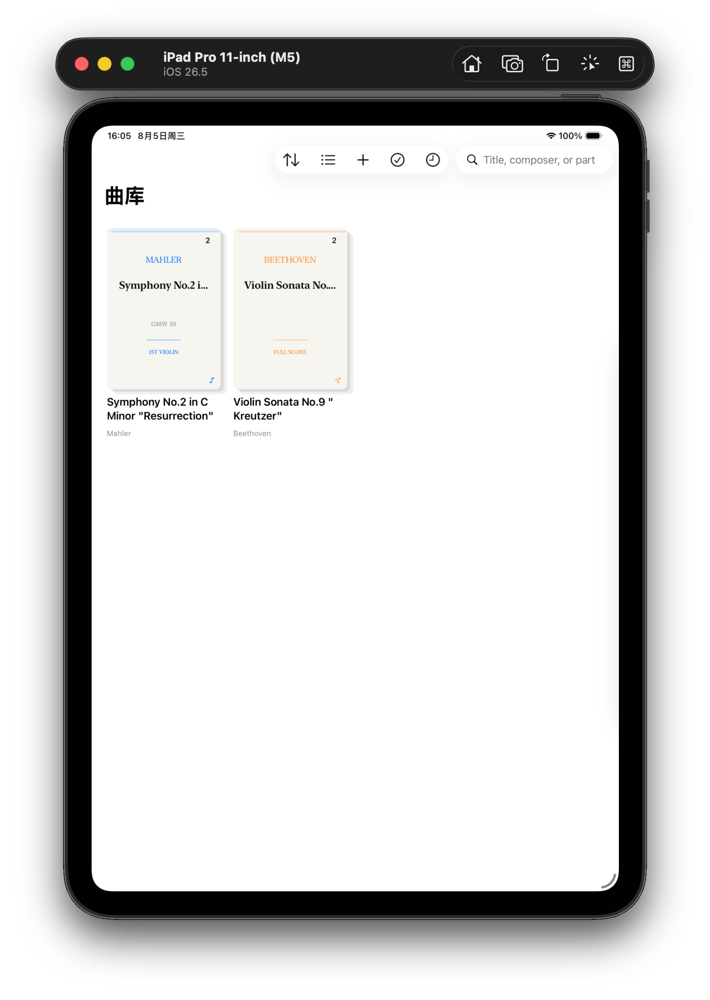
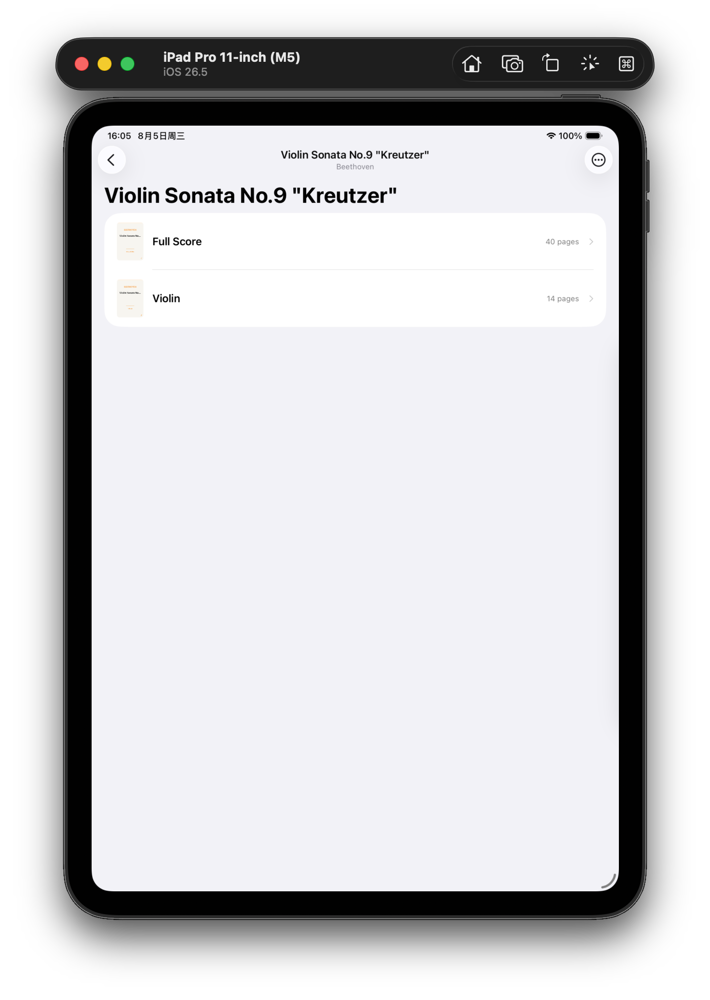
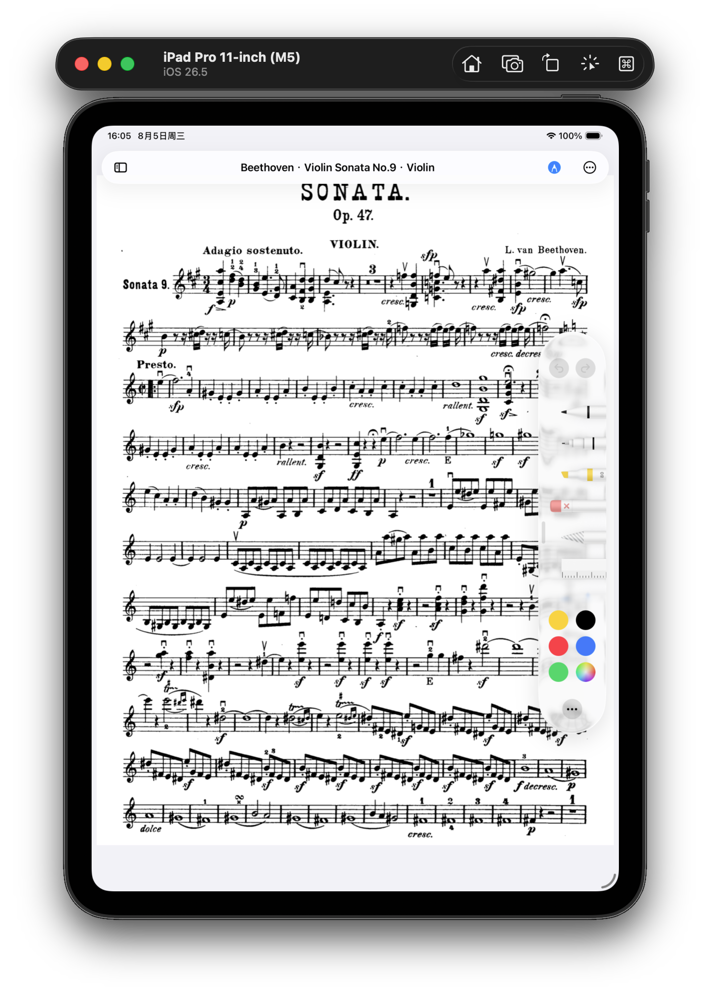

Case Study · 2026.07 – 至今
为作品而组织，为演奏而阅读。 Bowmark 把散落的 PDF 组织成作品、乐章与分谱，并为琴架上的翻页、缩放和 Apple Pencil 批注重新设计阅读体验。
Problem
作为校管弦乐团第一小提琴手，我面对的并不只是“怎么在 PDF 上写字”。同一部作品可能同时有总谱、不同乐器分谱、多个乐章和演奏版本；但通用文件管理只看见一份份彼此无关的文件。进入阅读后，连续滚动、常驻工具栏和通用批注逻辑，又没有围绕排练与演出的节奏设计。缺少的不是更多笔刷，而是以乐谱为中心的组织与阅读方式。

Definition
在曲库中，作品是稳定的音乐身份：它可以包含乐章、总谱、分谱和不同演奏版本，每份 PDF 仍然是一份可以独立打开的乐谱。进入谱面后，Bowmark 再把内容分成两个概念层：印刷音符属于稳定的作品层，指法、弓法和排练记录属于持续变化的演奏层。这两个模型共同决定导航、命名、批注图层与未来的结构化记号编辑。

Reading & Annotation
Bowmark 使用离散横向翻页，在宽屏上组成双页谱面，并让界面在阅读时退到内容之后。手指负责翻页、平移与缩放，Apple Pencil 只在明确进入批注模式后书写；批注按页面与图层保存，在改变方向、窗口尺寸或缩放后仍对齐原谱。阅读可靠性不是最后的 polish，而是产品成立的前提。

Process
我先用 PRD 与持续演进的 RFC 固化产品边界，再编排 Coding Agent 完成 Swift 实现，由自己负责方案取舍、代码审查、Git 变更管理、回归测试与 iPad 真机验收。开发中逐步替换通用 PDF 视口，建立 Bowmark 自己的分页、缩放、预渲染与墨迹坐标系统，解决快速翻页白屏、缩放跳变和 PencilKit 墨迹偏移等设备级问题。
技术决策：缩放视口 · 墨迹持久化 · 扫描增强 →Outcome
当前 MVP 已覆盖作品化曲库、总谱与分谱组织、文件与相机导入、页面增强、沉浸式乐谱阅读、Markup Layers 和 Apple Pencil 自由批注，并在真机上验证持久化与缩放稳定性。下一阶段将在这套模型之上，把指法、弓法和连弓从自由墨迹进一步转化为可选择、修改与重新渲染的演奏对象。
Retrospective
模拟器无法复现真实 Pencil 延迟、内存压力与缩放过程中的墨迹行为。早期把设备验证放得太晚，让快速翻页白屏和墨迹偏移在后期才暴露。现在每一项阅读器性能决策都必须带着真机场景验收：练习中不会打断演奏，才算完成。
← 返回全部作品